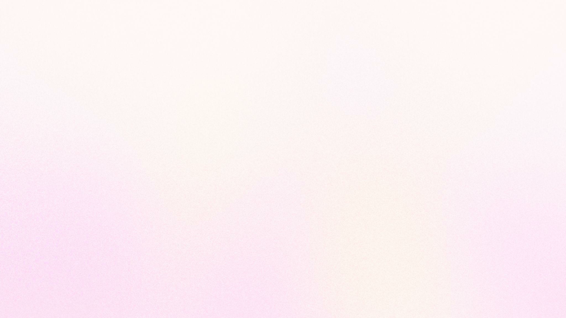

01 · title title-stage · role:title
idea: この 5 分が答える問いをタイトルとして掲げる
idea: この 5 分が答える問いをタイトルとして掲げる
MOSH の山本です。今日は会場を提供させていただいています。
「Fable 5 をどこに置くのか」。これが今日の 5 分でお答えする問いです。
【5秒】

Fable 5 は、
どこに
どこに
MOSH エンジニア 10 名に
02 · profile profile-stage · role:content
idea: このイベントのために社内の同僚に話を聞いてきた、という立場を示す
idea: このイベントのために社内の同僚に話を聞いてきた、という立場を示す
山本一将です。MOSH でエンジニアリングマネージャーをしています。
今日お話しするのは、私ひとりの見解ではありません。
【20秒】

自己紹介
山本 一将｜焚き火を
MOSH株式会社 Engineering Manager

X: @kyamamoto9120
今日の話
この
略歴
鉄道システム開発、
03 · asked post-stage · role:content
idea: 1 週間前に社内で実際に聞いた、という事実を示す
idea: 1 週間前に社内で実際に聞いた、という事実を示す
1 週間前、社内の Slack でこう聞きました。エンジニア全員が見るチャンネルです。
使っている人だけに聞くと偏るので、使っていない人にも理由を聞きました。
9 名から返ってきて、それに私を足した 10 名分が今日の材料です。
【20秒】
10名の回答
1週間前、
皆さまの
04 · voices list-stage · role:content
idea: 返ってきた声は、どれも失敗の代償が大きい場面を指していた
idea: 返ってきた声は、どれも失敗の代償が大きい場面を指していた
まず、返ってきた言葉をそのまま読みます。
「考慮漏れが怖い部分を徹底的にやらせる」
「デグレのリスクが深刻そうな機能の設計やレビューに使っている」
「実装が後半に進んだときに、リリースすることによるバグやリスクがないかを調べる」
「人が判断できるレベルで難解なイシューについての設計とレビュー」
読んでいて気づいたのは、誰も「速く書かせる」とは言っていないことでした。
怖い、深刻、リスク。そういう言葉ばかりが並びます。
【45秒】
10名の回答
返ってきた声
- 「考慮漏れが
怖い 部分を 徹底的に やらせる」 - 「デグレの
リスクが 深刻そうな 機能の 設計」 - 「リリースに
よる バグや リスクが ないか 調べる」 - 「人が
判断できる レベルで 難解な イシュー」
05 · usage chart-stage · role:content
idea: 用途を数えると設計・レビュー・調査に集まり、実装と答えた人は 0 名だった
idea: 用途を数えると設計・レビュー・調査に集まり、実装と答えた人は 0 名だった
用途を数えるとこうなりました。10 名のうち 1 名は使っておらず、
2 名は用途を絞らず全部に使っています。残る 7 名が挙げた用途の集計です。
設計、コードレビュー、リスクや影響範囲の調査。ここに集まりました。
そして右端です。実装に使っていると答えた人が、ひとりもいませんでした。
それどころか「実装は別のモデルでやる」と、わざわざ書いてくれた人が複数います。
【35秒】
10名の回答
何に
06 · why diagram-stage · role:content
idea: 3 つの用途に共通するのは、リスクの高さだった
idea: 3 つの用途に共通するのは、リスクの高さだった
なぜこの 3 つなのか。共通点は、リスクの高さです。
設計のミスは実装が終わってから分かる。レビューの見落としは本番で分かる。
影響範囲の読み違えは障害で分かる。3 つとも、間違えても、その場では気づけません。
気づけないまま進むと、あとの手戻りが大きい。
だから、いちばん深く考えるモデルをここに当てている。これが 10 名に共通する形でした。
【30秒】
10名の回答
なぜ、
07 · bridge statement-stage · role:transition
idea: 10 名の傾向から、自分ひとりの具体例へ視点を移す
idea: 10 名の傾向から、自分ひとりの具体例へ視点を移す
（一拍おく）
ここからは、もう少し具体的に。私自身の使い方をお見せします。
【8秒】

私の使い方
私は
08 · where stat-stage · role:content
idea: Fable 5 を監督ではなくワーカーに置いている
idea: Fable 5 を監督ではなくワーカーに置いている
まず数字から。自分のログを集計したら、Fable 5 の 70.5% がサブエージェントでした。
メインで動かしている監督役は、Opus 5 のまま変えていません。
実は 1 か月前、私は逆をやろうとしていました。ログに残っています。
「Fable をルートのモデルにして、必要な作業をサブエージェントとして起動したい」。
そう書いて設計を始めて、実測してやめました。
監督のコストは、ターン数かける、その時点のコンテキスト量で決まります。
Fable を監督にすると 1 ターンごとに 12〜20 万トークンを読み直して、
レビュー 1 回の費用の 6〜7 割を監督が占めました。ワーカーは 5〜8 万トークンで終わる。
同じ仕事でも、監督にやらせると数倍高くつく。
だから監督は据え置いて、ワーカーだけ Fable にしました。
【50秒】
私の使い方
監督ではなく、
70.5%
Fable 5 の
直近1か月、
09 · my-case versus-stage · role:content
idea: 手順が決まっているかどうかで、ワーカーのモデルを分けている
idea: 手順が決まっているかどうかで、ワーカーのモデルを分けている
では、どのワーカーを Fable にするか。私はこの基準で分けています。
左の 3 つは、見るものが決まっています。先例と揃っているか、ユーザー影響はどうか、
API 契約と合っているか。手順どおりに照らし合わせる仕事なので、誰がやっても答えが揃う。
だから安いモデルのままです。
右の 3 つは、そもそも何を探すかが決まっていません。ロジックが本当に正しいか。
決められた観点の隙間に何が落ちているか。設計として妥当か。
見つけられるかどうかが、モデルの能力で直接変わります。ここにだけ Fable 5 を指定しています。
基準は「手順があるか、判断が要るか」の一点です。
直近 1 か月で Fable 5 を名指しした呼び出しは 277 回、そのほとんどが右側でした。
【45秒】
私の使い方
レビューの
手順が
- 先例との
一貫性 - ユーザー影響
- API 契約
モデルの
- ロジックの
正しさ - 観点の
隙間の 探索 - 設計の
妥当性
10 · minority list-stage · role:content
idea: 今回まとめきれなかった少数の使い方も社内で試されている
idea: 今回まとめきれなかった少数の使い方も社内で試されている
最後に、今日の集計にまとめきれなかった使い方も紹介させてください。
1 つ目は、Fable 5 自身をオーケストレーターにする使い方です。
タスクを分解させて、適切なモデルのサブエージェントを立ち上げて指示させる。
2 つ目は、それをもっと細かく制御する形で、判断が要るサブエージェントだけ Fable を明示し、
機械的な調査や検証は Sonnet に固定する。
3 つ目は、切り替えのコストを嫌って全部 Fable にしてしまう人です。x20 でもカツカツだそうです。
ちなみに 1 名だけ使っていない人がいて、理由は社内バランサーとして Codex を回しているからでした。
【20秒】
他の使い方
少数だった
- 「タスク分解させ、
サブエージェントに 指示させる」 - 「判断が
要る サブエージェントだけ Fable を 明示」 - 「切り
替えが 面倒なので、 とりあえず 全部 Fable」
11 · closer statement-stage · role:closer
idea: 判断が要る場所を 1 つ選んで、そこに置いてみてほしい
idea: 判断が要る場所を 1 つ選んで、そこに置いてみてほしい
10 名に聞いて分かったのは、Fable 5 が「速く書かせる」ためではなく、
「見極めさせる」ために使われているということでした。
帰ったら、自分の仕事の中で「ここを間違えても、その場では気づけない」という場所を
1 つだけ選んでみてください。そこに置いてみる。それが今日の持ち帰りです。
ありがとうございました。
【22秒】
リスクが
1つだけ選ぶ
1つだけ選ぶ
全部に